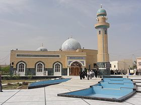
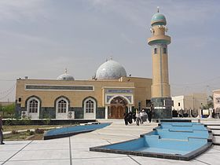

من المشاهد المشرفة في مدينة النجف الاشرف التي يقصدها الزوار من داخل المدينة ومن المدن والدول المجاورة، فهو يعد أحد الأماكن الثلاثة التي صلى فيها الامام الصادق (عليه السلام)، وكذلك موضع رأس الامام الحسين (عليه السلام).
الحنانة لغويا بفتح الحاء وتشديد النون مؤنث الحَنَّانُ، الذي يحن إلى الشيء، والحنّةُ بالكسر، رقة القلب.
سميت بالحنانة وذلك عندما مرّت سبايا الإمام الحسين (عليه السلام) بموضع الثوية، إذ عبثوا برأسه الشريف ورؤوس أصحابه، فصدرت أصوات من الحنين جزعاً على ما حلّ بهم، فالكلمة عربية الاشتقاق أصيلة، وقد تأتي من تحنّن عليه: أي ترحم، والحنان: الرحمة.
أو أن الكلمة مشتقة من لفظة "حنّا"، و"حنا": دير نصراني قديم من أديرة الحيرة، كان في موضع المسجد عينه، وتطورت اللفظة من "حنّا" إلى "حنانة" بمرور الزمن، ودير حنّا قد بناه المنذر الأوّل بن النعمان الأوّل الذي حكم بين 418 ـ 462م، وكان ديراً عظيماً في أيامه.
يقع مسجد الحنانة في شمال بلدة النجف القديمة على يسار الذاهب إلى الكوفة، إذ يبعد مسجد الحنانة عن قبر أمير المؤمنين(عليه السلام) بحوالي 1000م، ويقع شمال غربي الكوفة على يمين الذاهب إلى النجف الأشرف.
وروي انه في هذا الموضع انزلوا سبايا ال بيت رسول الله (صلى الله عليه واله وسلم) عيال الحسين (عليه السلام) بعد شهادته في كربلاء 10 محرم الحرام سنة 61هـ، فقد روي عن المفضل بن عمرو قال: جاز مولانا الإمام جعفر بن محمد الصادق (عليه السلام) بالمائل طريق الغري فصلّى عندهُ ركعتين، فقيل له: ما هذه الصلاة؟ قال: هذا موضع رأس جدي الحسين(عليه السلام) وضعوه هاهنا، وقد زاره الإمام (عليه السلام) بهذه الزيارة: (السلام عليك يا بن رسول الله، السلام عليك يا بن أمير المؤمنين، السلام عليك يا بن الصديقة الطاهرة سيدة نساء العالمين...).
وروي عن أبان بن تغلب قال: كنت مع أبي عبد الله (عليه السلام) فمر بظهر الكوفة، فنزل فصلّى ركعتين، ثم سار قليلاً فصلّى ركعتين، ثم سار قليلاً فنزل فصلّى ركعتين، ثم قال: هذا موضع قبر أمير المؤمنين (عليه السلام)، قلت: جعلت فداك والموضعان اللذان صليت بهما! قال: موضع رأس الحسين(عليه السلام)، وموضع منبر القائم.
للتفصيل : فقد أقيم قديماً محل دير نصراني، وقد وضع رأس الحسين (عليه السلام) الشريف برهة من الزمن في هذا المسجد عندما كان في طريقه إلى الكوفة، ولذلك هناك مشهد لرأس الحسين(عليه السلام) في وسط هذا المسجد محاط بقفص من الخشب المنقوش، وفوقه قبّة مكسوة بالقاشاني، ومدخل المسجد أيضاً محاط بالقاشاني، وقد كتب عليه بعض الآيات القرآنية والأبيات الشعرية. تشير النصوص الى أن مسجد الحنانة هو موضع القائم أو ((القائم المائل)) , وقد مر عليه جثمان أمير المؤمنين (عليه السلام), وهو في طريقه من الكوفة الى أرض الغري. والقائم يعني البناء أو الأسطوانة وللحنانة تفسيرات عديدة منها: تعود الى الأنحناء, ومنها أن سبايا آل محمد لما وقفوا في هذا الموضع صارت لهم حنة, أو أن أولاد أمير المؤمنين (عليه السلام) لما مروا بجنازته في هذا الموضع بكوا وحنوا. أو أنها نسبة لدير حنة وهو من أديرة الحيرة قبل الأسلام. وبعض يرى: أن الحنانة لفض مصحف من الجبانة, وهي أرض الثوية التي ضمت قبور الكوفيين وثوى فيها عدد من الصحابة, وكان الأمام علي (عليه السلام) قد خرج الى ناحية الجبانة وأخذ بيد كميل بن زياد النخعي, فلما أصحر تنفس الصعداء ثم قال: أن هذه القلوب أوعية, فخيرها أوعاها, فأحفظ عني ما أقول لك. وذكر السيد ابن طاووس: أن الإمام الصادق (عليه السلام) أوصى المفضل بن عمران يصلي في ((الجبانة)) ركعتين لأنها موضع رأس الحسين (عليه السلام). وتروي النصوص أن رأس الحسين (عليه السلام), ورؤس أهل بيته وأصحابه قد وضعت في هذا المكان وهي غير طريقها الى مدينة الكوفة حيث الوالي الأموي عبيد الله بن زياد. وقد شيد في هذا الموضع مسجد كبير, أكتسب صفة القدسية والأحترام والتقدير من قبل الناس, وأصبح مقصداً للزيارة, ويقول المستشرق الفرنسي ماسنيون : ان مسجد الحنانة هو الموضع الذي وضع فيه جثمان علي. وفي الحقيقة أن الجثمان الطاهر قد مر بهذا الموضع , ولكن رأس الحسين(عليه السلام)قد وضع فيه في أثناء طريقه الى الكوفة, ولذا تستحب زيارة الحسين(عليه السلام)في هذا المسجد وهناك أحاديث كثيرة عن أئمة آل البيت عليهم السلام في فضيلة هذا المكان. وتذكر بعض المصادر الى أن جماعة من أصحاب أمير المؤمنين (عليه السلام) قد دفنوا في مسجد الحنانة وقد أرخ الخطيب السيد مهدي الأعرجي بناء مسجد الحنانة عام 1340 هـ بقوله هــــي أمســـــت كبيتــــــه المعمــــــــور
.png)
.jpg) 

.jpg)
.jpg)